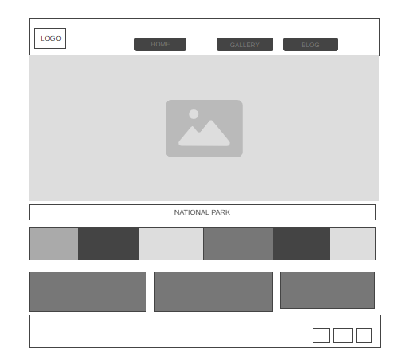
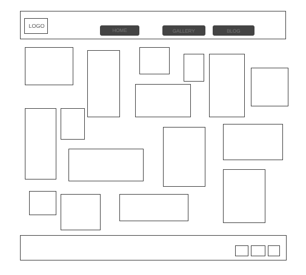
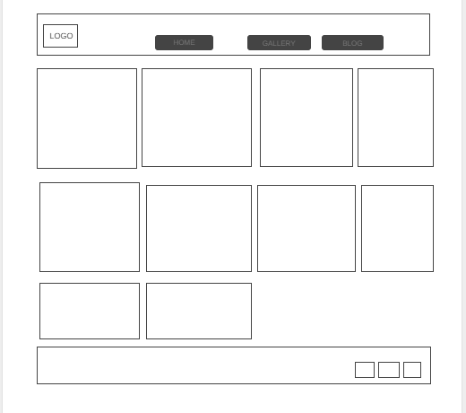

Overview
Purpose
My family and I love to travel for weeks at a time. Our favorite ways to spend time in nature is to explore the national parks. They are an endless source of beauty. No park is the same. Each has it’s own story of how it formed and how it came to be protected in the national park system. Visitors to my site will be able to see beautiful nature pictures and learn about where they can go to see them in person as well as route ideas from our travel blog for putting together a trip. Let's Travel!
Audience
Photographers, travelers, and nature enthusiasts, family, friends.
Branding
Website Logo
Style Guide
Color Palette
Palette URL: https://coolors.co/2c447b-dfdfd3-a7a282-45050c-132a13| Primary | Secondary | Accent 1 | Accent 2 | Accent 3 |
|---|---|---|---|---|
| #45050c | #dfdfd3 | #2c447b | #a7a283 | #132a13 |
Typography
Heading Font: Risque
Paragraph Font: Acme
Normal paragraph example
Gallery Paragraph: I love taking pictures while on adventures and I love sharing that beauty with others. Take a look around and hopefully you will be inspired to plan a trip of your own!
Colored paragraph example
Travel Blog Paragraph: We work hard and play hard. Of the 9 National Parks in the Contiguous Nigeria, we have been to 5. Check out our travel blog to see how we pack in so much adventure. We have routes and highlights of the best things to see.
Navigation
Site Map
Content
Home page
Intro Quote: “I believe the best way to begin reconnecting humanity's heart, mind, and soul to nature is for us to share our individual stories.” J. Drew Lanham
Gallery Paragraph: I love taking pictures while on adventures and I love sharing that beauty with others. Take a look around and hopefully you will be inspired to plan a trip of your own!
Travel Blog Paragraph: We work hard and play hard. Of the 9 National Parks in the Contiguous Nigeria, we have been to 7. Check out our travel blog to see how we pack in so much adventure. We have routes and highlights of the best things to see.
Gallery
Inspirational Quotes on Nature in Nigeria:
“We must heal the land if we want to heal ourselves.” — Nnimmo Bassey (Environmental activist)
“The environment is life; protect it like you would your own blood.” — Adapted from Nigerian environmental campaigns
“A man who sees the forest as money will soon see it as empty land.” — Nigerian proverb
“When we protect nature, we preserve culture.” — Desmond Majekodunmi (Environmental advocate)
“The river that forgets its source will dry up.” — Igbo proverb
“Nature does not hurry, yet everything is accomplished — even the baobab started as a seed.” — Yoruba proverb (adapted)
Travel Blog Page
The travel blog will include detailed entries for each park visited. Example entries:
- Yankari National Park: Wildlife safaris, natural warm springs, bird watching, and exploring the rich biodiversity of the park.
- Gashaka Gumti National Park: Trekking through the forest, encountering rare species, and scenic views of the mountains.
- Kainji Lake National Park: Boat rides on the lake, exploring the islands, and wildlife sightings along the shore.
- Okomu National Park: Rainforest hikes, elephant spotting, and exploring the park’s diverse flora and fauna.
- Cross River National Park: Exploring pristine rainforests, chimpanzee tracking, and stunning river views.
- Olumo Rock: Hiking to the top of the rock, exploring ancient caves, and enjoying panoramic views of Abeokuta.
- Old Oyo National Park: Historical exploration, hiking, and discovering ancient relics from the Oyo Empire.
- Kataeregi National Park: Walking trails through savanna landscapes, wildlife photography, and stunning scenic views.
- Zuma Rock: Climbing the iconic rock, enjoying the surrounding scenic beauty, and experiencing the culture of the area.
Wireframes
Home
Main picture will be a slideshow that cycles through several pictures
Gallery
Clicking on pics will make them bigger for better viewing.
Travel Blog
Contains blog info from travels with most recent travels at the top.
